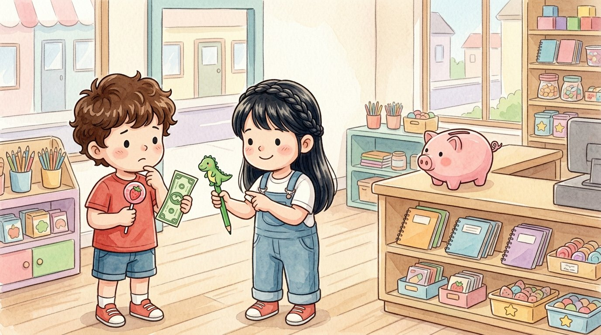

Primer grado · Estudios sociales · SS.1.EC.1
El dólar de Israel
Un cuento sobre cómo elegir cuando no podemos tenerlo todo.
Tres palabras nuevas
Escoger una cosa entre varias.
Lo que escoges después de pensar.
Guardar dinero para después.
Toca un dibujo para oír la palabra y qué significa.
El cuento
La abuela le dio un dólar a Israel.
En la tienda, Israel vio una paleta de fresa y un lápiz de dinosaurio.
Cada cosa costaba un dólar. ¡Solo podía elegir una!
—Si compro la paleta, no puedo comprar el lápiz —pensó.
Lucía le dijo: —Piensa qué te sirve más.
La paleta se acaba en un ratito. El lápiz dura mucho tiempo.
Israel tomó su decisión: compró el lápiz.
La paleta se quedó en la tienda. Eso fue lo que dejó.
Días después, Israel quiso una pelota de cinco dólares.
Esta vez decidió ahorrar su dinero en una alcancía.
Mientras tanto, dibujó con su lápiz un dinosaurio para Adrián.
Cuando elegimos una cosa, dejamos otra. Por eso pensamos bien antes de decidir.
Preguntas
Escucha la pregunta y toca el dibujo correcto.
-
Pregunta A. ¿Por qué Israel solo podía elegir una cosa?
Cada cosa costaba un dólar y él tenía solo uno.
-
Pregunta B. ¿Qué compró Israel?
Eligió el lápiz y dejó la paleta.
-
Pregunta C. ¿Qué hizo para comprar la pelota?
Guardó su dinero poco a poco en la alcancía.